Imperium
Imperium Apameia-Syria
← all settlements · all regions · wiki index
The settlement of the region of Apamene, held at the campaign start by Seleucid Empire (Eastern Hellenistic).
Size: Large city · Population: 3,500 · Buildings: 13
What is already built
| Building chain | Level | Building chain | Level | Building chain | Level | |||
|---|---|---|---|---|---|---|---|---|
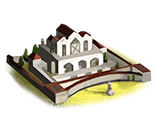 | core building | Pro-Consul's Palace | 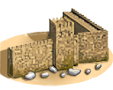 | defenses | Stone Wall | 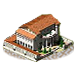 | governmentD | Homeland |
| hinterland region | Region Information Scroll | 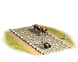 | hinterland roads | Highways | market | Forum | ||
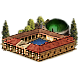 | health | Public Baths (Sanitation) | 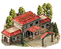 | military industrial complex | Basic Armoury | 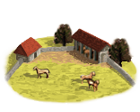 | horse trainer | Horse Breeder (Rural) |
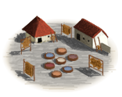 | hides industry | Leatherworker (Urban) | irrigated farming | Irrigation Aqueducts (Crops) | centralized mint | State Mint (Civic) | ||
| temples standard | Large Temple |
What can be recruited here
16 units, as its owner, at the campaign start
| Unit | Raised at | Cost | Upkeep | Unit | Raised at | Cost | Upkeep | Unit | Raised at | Cost | Upkeep | |||
|---|---|---|---|---|---|---|---|---|---|---|---|---|---|---|
| Akontistai | Homeland | 898 | 329 | Greek Archers | Homeland | 1,197 | 438 | Greek Hoplites | Homeland | 1,607 | 588 | |||
| Greek Peltasts | Homeland | 1,157 | 423 | Greek Slingers | Homeland | 1,080 | 395 | Mercenary Indian War Elephants | Homeland | 6,711 | 1,637 | |||
| Prodromoi | Homeland | 1,338 | 539 | 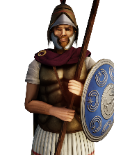 | Seleucid Argyraspides | Homeland | 2,349 | 860 | Seleucid Chalkaspides | Homeland | 1,987 | 727 | ||
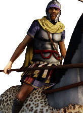 | Seleucid General's Bodyguard (Early) | Homeland | 5,316 | 80 | 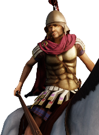 | Seleucid Hetairoi | Homeland | 2,931 | 1,180 | 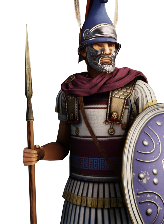 | Seleucid Hypaspists | Homeland | 2,450 | 897 |
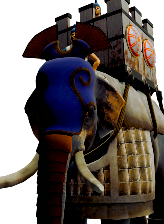 | Seleucid Indian War Elephants (Heavy) | Homeland | 5,632 | 2,061 | 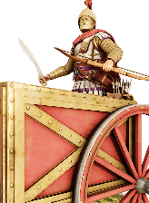 | Seleucid Scythed Chariots | Homeland | 5,118 | 1,873 | 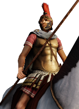 | Seleucid Xystophoroi | Homeland | 2,079 | 837 |
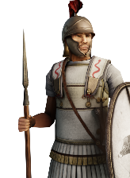 | Thureophoroi | Homeland | 1,716 | 628 |
Waiting on the The Daphne Reforms — 1 unit
| Unit | Raised at | Cost | Upkeep | Unit | Raised at | Cost | Upkeep | Unit | Raised at | Cost | Upkeep | |||
|---|---|---|---|---|---|---|---|---|---|---|---|---|---|---|
| Seleucid Argyraspides (Reform Swordsmen) | Homeland | 2,549 | 933 |
The land around it
Terrain, climate, fertility, water, port, the trade goods placed inside the borders, and the recruitment zones and homeland this ground counts as, are all on Apamene — stated there once, so the two pages cannot disagree.